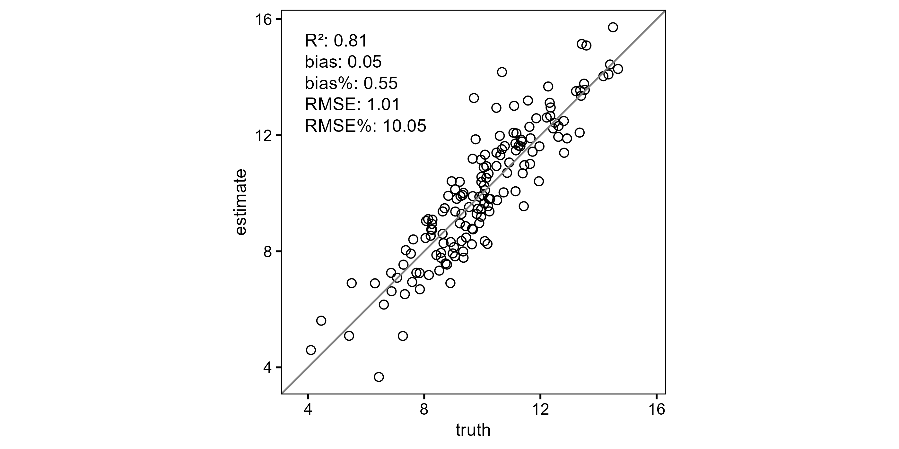
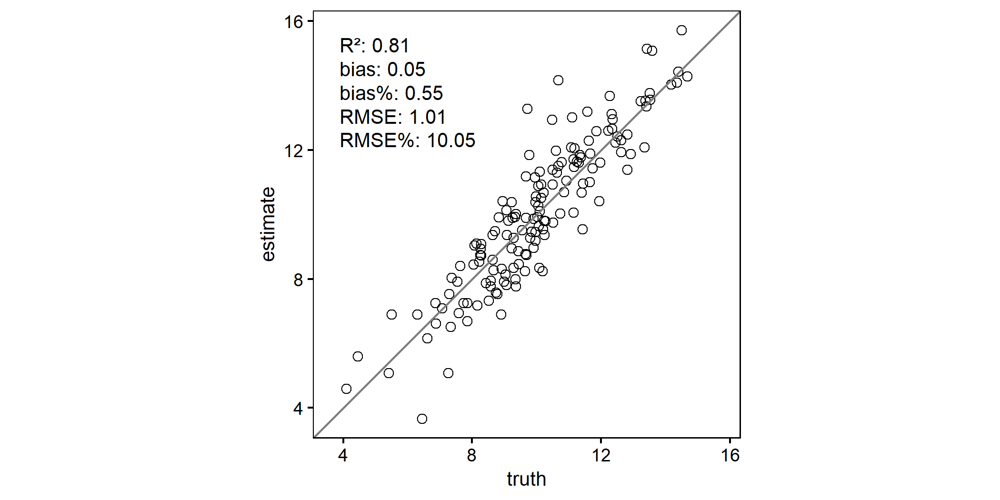
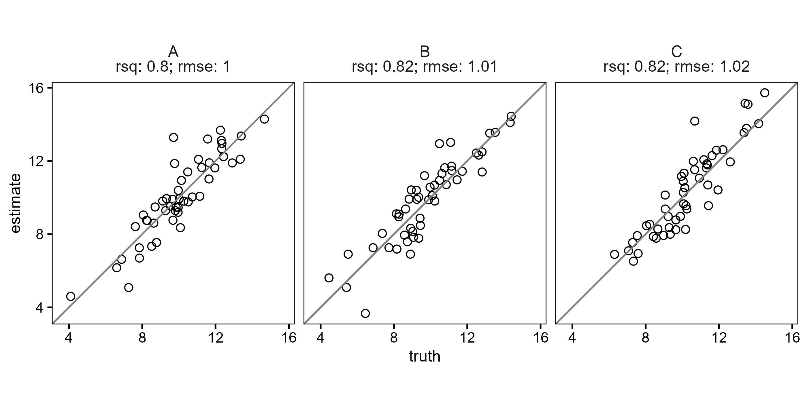
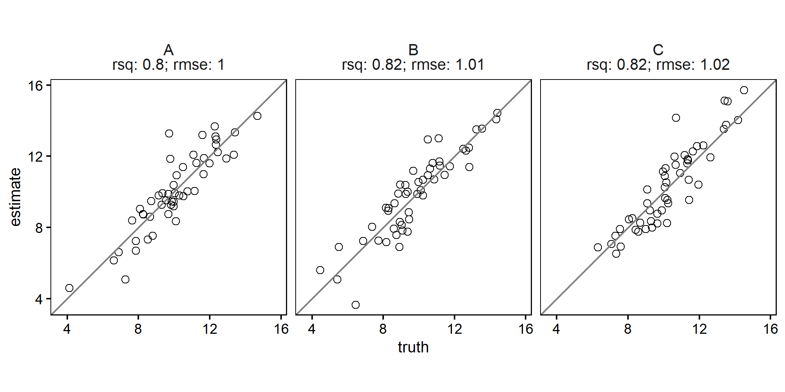
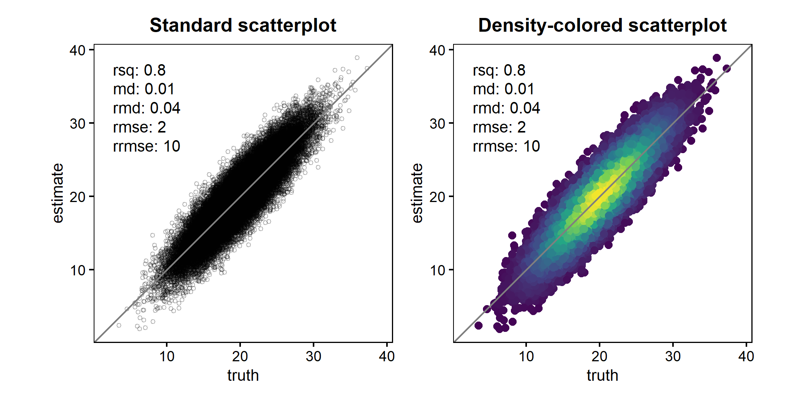
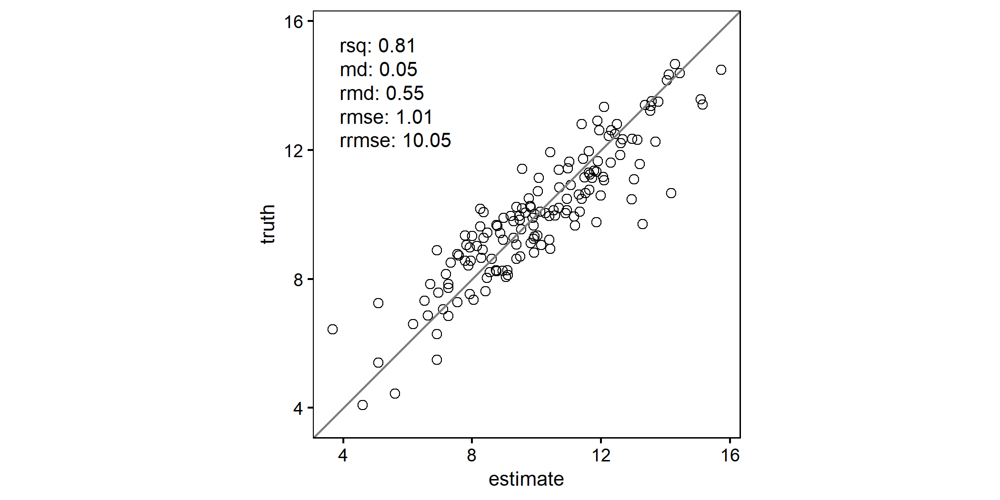

This package provides functions for quickly calculating measures of model prediction accuracy and creating enhanced scatterplots. The scatterplots can include text summarizing the agreement metrics (e.g., R², RMSE, MAPE) between two plotted variables, with support for grouped data and faceting. Agreement metrics are sourced from the {yardstick} package and can be further customized by the user.
Why?
Scatterplots are one of the most frequently used visualizations in my daily work. While creating a scatterplot is straightforward, I wanted a version that would meet these specific needs:
- Ensure the plot is always square.
- Include a 1:1 reference line.
- Provide an optional text panel showing agreement statistics, allowing an easy customization of the metrics included.
- Seamlessly handle grouped data, creating faceted plots with minimal effort.
- Automatically switch to density-colored points to reduce overplotting
Examples
Simple scatterplot with default set of agreement metrics:
library(dplyr)
library(scatter)
# some fake data
df <-
tibble(
truth = c(rnorm(150, 10, 2)),
estimate = truth + rnorm(150,0, 1),
group = rep(c("A", "B", "C"), each = 50),
group2 = rep(c("D1", "D2"), each = 75),
)
scatter(df, truth, estimate)
Metric names can be easily modified:
mymetrics <- list(
"R²" = rsq,
"bias" = md,
"bias%" = rmd,
"RMSE" = rmse,
"RMSE%" = rrmse
)
scatter(df, truth, estimate, metrics=mymetrics)
Scatterplot for grouped data with agreement metrics:

Scatterplot for grouped data with agreement metrics positioned outside the plots:
df %>%
group_by(group) %>%
scatter(truth, estimate, metrics=list(rsq,rmse), metrics_position = "outside")
Scatterplots with large datasets
When working with large datasets, heavy overplotting can obscure the underlying data distribution and make it difficult to identify systematic patterns, biases, or outliers. To address this, scatter() supports density-colored points (ggpointdensity::geom_pointdensity()). This approach colors points by their local density, revealing the structure of dense regions while still retaining individual observations.
The example below compares a standard scatterplot with a density-colored version for the same large dataset.
library(patchwork)
set.seed(123)
df2 <- tibble(
truth = rnorm(50000, 20, 4),
estimate = truth + rnorm(50000, 0, 2)
)
p1 <- scatter(
df2, truth, estimate,
point_style = "point",
points_alpha = 0.3,
points_size = 1
) +
ggtitle("Standard scatterplot")
p2 <- scatter(
df2, truth, estimate,
point_style = "pointdensity",
) +
ggtitle("Density-colored scatterplot")
p1 + p2
For convenience, scatter() can also switch to this behavior automatically using point_style = "auto" (default), which enables density coloring once the number of observations exceeds a configurable threshold.
Axis orientation: observed vs. predicted
By default, scatter() places observed (truth) values on the x-axis and predicted (estimate) values on the y-axis. This follows recommendations in the modelling literature, but users can easily switch back to the alternative convention (predicted on x) using swap_axes = TRUE.
The most influential position on this topic, published by Piñeiro et al. (2008), argues that observed values should be placed on the x-axis to improve the interpretability of regression diagnostics and model evaluation, based on the idea that predictions are conditioned on observations. However, Pauwels et al. (2019) subsequently revisited this argument and pointed out that parts of this reasoning are conceptually flawed, showing that the choice of axis orientation does not have a universally correct solution and can influence interpretation depending on the modelling context and analytical objective.
Importantly, axis orientation in scatter() affects only the visualization; agreement metrics are always computed using the original (truth, estimate) pairing (compare the figure below with the top-most scatterplot):
scatter(df, truth, estimate, swap_axes = TRUE)